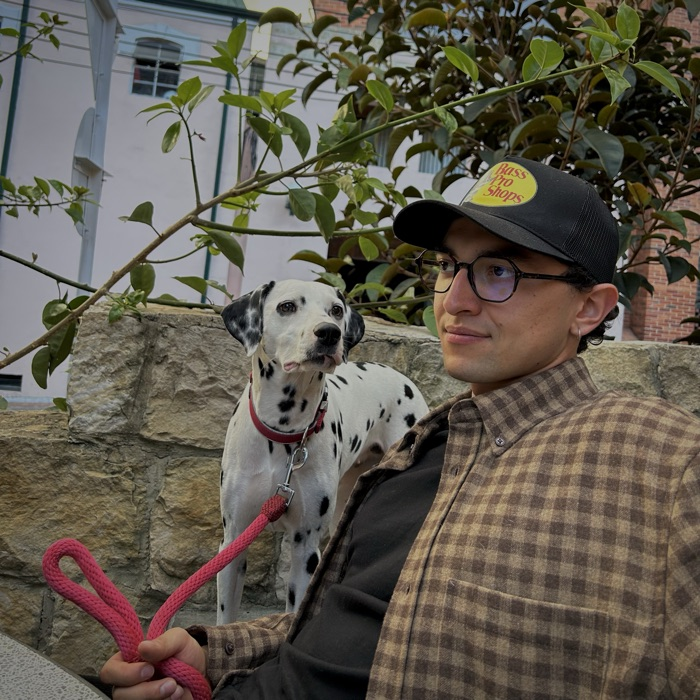

Hi! It's Nico :)
Welcome to my cybercorner.
I'm an entrepreneur. A professional FAFOer and FITFOer. A cyberpunk.
I enjoy nature, learning, music, art, creating and fotosynthesis.
A fun fact about me is that I'm a trained carpenter, so I can call myself a builder in the full sense of the word.
This website is an archive and a creative expression in a world where timelines and profiles are cookie-cutter platforms.
Thanks for visiting and reading. Mi casa es tu casa ;)
It's odd to have acknowledgements on a personal website, but I think being thankful feels good. Especially to those who have shown incredible support to me as a human.
To:
Helen - Santi - Felix - Nike - Doris - Pau - Tony - Esteban - Sebas - Sean - Matt - Keith - and many many more humans that have reminded me of my worth <3
Film, digital, and whatever's in between.
solid = read · dashed = wishlist · double = reading